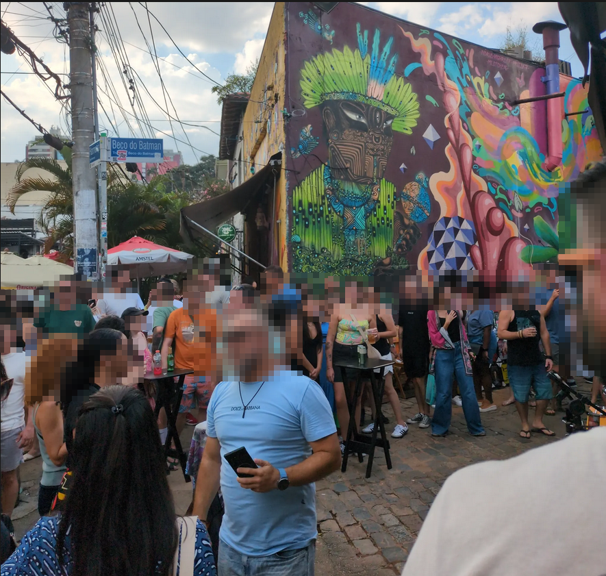

Énoncé
Thanks to Void's l33t hacking skills, we obtained some CCTV footage from 2022 that might help us track Cipher's location. Our intel tells us that the individual caught on the CCTV footage that day was one of Cipher's accomplices. They were planning to meet up at one of Cipher's safe houses.
We have this image of Cipher's accomplice, Phicer, leaving a restaurant. Can you and Specter find the name of the burger restaurant?
Flag format: THM{restaurant_name}, separate words with underscores, and no capital letters.
Analyse de la photo
Nous disposons d'une image prise dans une rue.
En regardant attentivement, un panneau de rue est visible sur la photo.
Recherche OSINT
Nous zoomons sur le panneau pour lire le texte :

Le panneau indique Beco do Batman. Une recherche rapide sur Google Maps avec Beco do Batman hamburger nous donne plusieurs résultats.
Nous testons le premier restaurant trouvé :

Validation du flag
Le premier restaurant listé est Coringa do Beco. Nous testons le flag :
THM{coringa_do_beco}
Et c'est la bonne réponse ! ✅
Conclusion
En utilisant une approche OSINT basée sur l'analyse d'image et les outils de cartographie en ligne, nous avons pu retrouver le restaurant cible.
- Observation des détails visibles sur l'image.
- Recherche Google Maps avec les informations trouvées.
- Test des restaurants pour valider la réponse.
Score obtenu
✅ Flag trouvé et validé : 15 points
Flag by Lux_